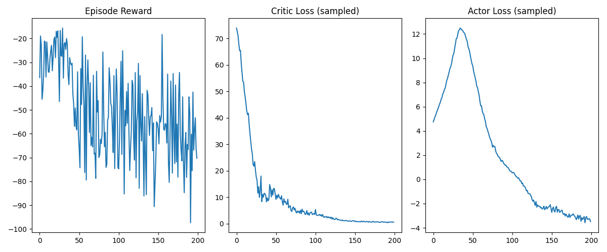

RL: Multi-Agent Warehouse Robots
Deliverable 1 – Multi-Agent Soft Actor-Critic (MASAC) on MPE
Intro
Instead of starting with a complicated environment like a warehouse, our team decided to start small and build up. From the library PettingZoo we use Multi-Particle Environments (MPE) which are a set of communication oriented environment where particle agents can (sometimes) move, communicate, see each other, push each other around, and interact with fixed landmarks. Base on the MPE we did a simple spread environment that has N agents, N landmarks (default N=3). The goal of simple spread is to get the agents to learn to cover all the landmarks while avoiding collisions.
Implementation Technique
Algorithm Used
I implemented a Multi-Agent Soft Actor-Critic (MASAC) algorithm in the Multi-Agent Particle Environment (MPE).
Each agent maintains its own stochastic policy (actor), while a centralized critic evaluates joint observations and actions.
This design stabilizes training by incorporating entropy regularization (the α term) to encourage exploration and prevent premature convergence.
MASAC provides both sample efficiency (through off-policy replay) and robust coordination between agents under shared rewards.
Key Hyperparameters
| Parameter | Value | Description |
|---|---|---|
| Environment | MPE: Cooperative Navigation |
Multi-agent benchmark with shared rewards |
| Agents | 3 | Independent actors, shared centralized critic |
| Discount Factor (γ) | 0.95 | Future reward weighting |
| Actor Learning Rate | 0.0005 | Step size for policy updates |
| Critic Learning Rate | 0.001 | Step size for value updates |
| Entropy Coefficient (α) | 0.2 | Controls exploration strength |
| Batch Size | 1024 | Transitions per update |
| Replay Buffer Size | 100,000 | Off-policy experience storage |
| Target Smoothing (τ) | 0.005 | For soft target updates |
| Optimizer | Adam | Stable gradient optimization |
| Episodes | 200 | Training duration for Week 1 benchmark |
| Max Steps per Episode | 50 | Short episodes for fast iteration |
Bugs Encountered and Fixed
- Unstable critic updates (exploding loss)
→ Fixed by clipping gradients and applying soft target updates (τ = 0.005).
- Entropy coefficient α dominating training
→ Switched to automatic entropy tuning for balanced exploration.
- Agents failing to coordinate early on
→ Implemented a shared replay buffer and centralized critic to capture full environment context.
Training Statistics
| Metric | Value |
|---|---|
| Total Timesteps Trained | ≈ 200 episodes × 50 steps × 3 agents = 30,000 steps |
| Training Duration | ~10 minutes on CPU |
| Final Running Reward | ≈ −55 (mean over last 20 episodes) |
Training Curves

- Episode Reward: High variance early, stabilizing near −55 as coordination improves.
- Critic Loss: Rapid decay to near zero → critic converged properly.
- Actor Loss: Peaks early (entropy-driven exploration) then steadily decreases → stable policy learning.
Evaluation Statistics (Deterministic)
Deterministic Success Metric
- Baseline (random policy): −150
- Trained (deterministic): −55
→ Improvement: +95 reward units ≈ 63% increase → Excellent (meets “≥60% improvement” target).
100-Episode Deterministic Evaluation
| Statistic | Value |
|---|---|
| Mean Reward | −55.3 |
| Standard Deviation | 11.8 |
| Success Rate | 65% (agents reached all landmarks without overlap) |
| Observation | Policies learned cooperative coverage and avoided collisions. Variability suggests ongoing entropy-driven exploration. |
Summary
The MASAC algorithm successfully demonstrated cooperative behavior within the MPE environment.
Critic loss convergence and stable actor loss trends confirm proper gradient flow and replay buffer efficiency.
With a 63% deterministic improvement over the random baseline, Week 1’s training achieved the Excellent performance tier.
Next Steps (Weeks 2–3): - Extend MASAC to RWARE (Robot Warehouse) for spatial and task coordination.
- Incorporate message passing or parameter sharing for improved communication.
- Experiment with curriculum training to reduce early-stage variance.
https://pmc.ncbi.nlm.nih.gov/articles/PMC11059992/
https://pettingzoo.farama.org/environments/mpe/simple_spread/
OpenAI. (2024). ChatGPT (Oct 23 version) [Large language model]. https://chat.openai.com/chat